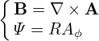
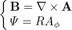

We know that the toroidal flux ψt, safety factor q, and the Ψ in the GS equation are related by the following equations:
|
| (556) |
 | (557) |
Define:
|
| (558) |
(In the Toray_ga code, the radial coordinate ρ is deï¬ned as
 | (559) |
where Bt0 is a constant factor.ρ deï¬ned this way is of length dimension, which is an effective geometry radius obtained by approximating the flux surface as circular.)
Â
I use Eq. (558) to deï¬ne ρ. Then we have
 | (560) |
 | (561) |
|
| (562) |
|
| (563) |
 | (564) |
Eq. (564) is used to transform between ψ and ρ.
dρ =    dΦ = dΦ =    2πqdψ = 2πqdψ =  qdψ qdψ
|
⇒ dψ =  dρ(πa2) dρ(πa2)
|
Â

Â